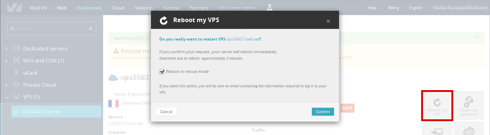

How to install Alpine Linux on OVH
I recently migrated my OVH VPS to Alpine Linux. However, OVH doesn’t have any Alpine Linux image, so I had to perform a manual installation from the rescue CD. This post will explain what are the steps to follow to have a fully functional system. It should work with other Cloud providers with minimal tweaking.
About Alpine Linux
Alpine Linux is a lightweight distribution using musl libc, a lightweight alternative to glibc, and openrc as an alternative to systemd maintained by Gentoo developers. It also uses grsec kernel patches and busybox instead of a complete GNU core utilities. It has its own package manager with a very simple packaging format similar to ArchLinux PKGBUILD.
This distribution is not for everyone as it has been stripped down and a lot of things won’t work as expected. For instance, you won’t be able to use man out of the box, and lspci will give you a cryptic output. This is of course fixable, but this is not the topic of this post. There is a page to get most of the standard unix tools working.
On the plus side, you will have a working Linux environment able to run any application (web server, database, docker, etc…) with a very small memory and hard drive footprint.
You can find more compelling arguments on this reddit thread.
Boot your VPS in rescue mode
You will first need to boot your VPS in recovery mode. On the admin page of your VPS, click on Reboot my VPS, and tick the Reboot in rescue mode option.

This step takes a while (about 5 minutes, and not 2 as they estimate), so you should grab a cup of coffee or do something else. Unless of course you like watching their progress bar that is almost never updated. Once it’s finished, you will receive an email with the parameters to connect to your server via ssh.
Setup the disks
The VPS might be formatted in ext3. If that’s the case, I would recommend reformatting it in ext4 as it yields better performance. To do that, you can use the following commands:
# umount /mnt/sdb1
# mkfs.ext4 /dev/sdb1
# mount /mnt/sdb1If the 64bit feature of the ext4 filesystem is enabled, you will need to disable it as syslinux doesn’t support it. It should not be the case for OVH VPS, but just in case here are the commands to check and disable this feature.
# dumpe2fs /dev/sdb1 | grep 64bit
Filesystem features: (...) 64bit (...)
# resize2fs -s /dev/sdb1Install the system
This procedure is mostly inspired from this page of the Alpine Linux wiki: chroot installation. I added some necessary steps to have a fully functional system.
First, you need to choose a mirror from this page. If like mine your VPS is hosted in Europe, the mirror below should be fast enough.
# export mirror=http://dl-3.alpinelinux.org/alpine
# export chroot_dir=/mnt/sdb1Then, you need to download the apk binary, Alpine’s package manager. The version variable can be found on this page. For instance, when I wrote this post, it was 2.7.3-r0 for Alpine v3.6 (the latest stable).
# export version=2.7.3-r0
# wget ${mirror}/latest-stable/main/x86_64/apk-tools-static-${version}.apk
# tar -xzf apk-tools-static-*.apk
# ./sbin/apk.static -X ${mirror}/latest-stable/main -U --allow-untrusted --root ${chroot_dir} --initdb add alpine-baseThen, you will need to create and copy some files to the newly created system before running chroot. You should replace the branch variable by the latest version of Alpine.
# export branch=v3.6
# mkdir -p ${chroot_dir}/etc/apk
# echo "${mirror}/${branch}/main" > ${chroot_dir}/etc/apk/repositories
# cp /etc/resolv.conf ${chroot_dir}/etc/You will also need to mount some pseudo-filesystems.
# mount -t proc none ${chroot_dir}/proc
# mount -o bind /sys ${chroot_dir}/sys
# mount -o bind /dev ${chroot_dir}/devYou are now ready to chroot into your VPS and perform the system setup.
# chroot ${chroot_dir} /bin/sh -lNow, you can do some setup. This step is pretty straightforward, you just have to follow the instructions. It will setup the apk repository, the hostname, the keymap and the timezone of your server.
# apk update
# apk add alpine-mirror
# setup-apkrepos
# setup-apkcache
# setup-hostname
# setup-keymap
# setup-timezoneThe interface setup is a bit more tricky. You usually have a /32 address but you also need a gateway for network access, so you cannot use the gateway keyword. Therefore, the setup-interfaces script won’t work.
Here is how your /etc/network/interfaces file should look like assuming your IP address is 12.34.56.78. You might notice that it is very similar to the interface setup file of Debian. This is because Alpine is also using ifupdown.
# cat /etc/network/interfaces
auto lo
iface lo inet loopback
auto eth0
iface eth0 inet static
address 12.34.56.78
netmask 255.255.255.255
broadcast 12.34.56.78
post-up route add 12.34.56.1 dev eth0
post-up route add default gw 12.34.56.1
post-down route del default gw 12.34.56.1
post-down route del 12.34.56.1 dev eth0The post-up and post-down options are used to setup and delete the routes when the interface is create and deleted. You should also check the actual address for the gateway with the following command:
# ip route
default via 12.34.56.1 dev eth0
12.34.56.1 dev eth0 You can now install an ssh and ntp server. I used the suggested ones (openssh and chrony).
# setup-sshd
# setup-ntpYou will also need to choose a root password.
# passwdYou can also create some users now. The ssh access is disabled by default for root user, so if you bypass this step don’t forget to enable it.
# adduser admin
# addgroup admin wheelEnable openrc services
By default, all the services are disabled, making the system unbootable. You should enable these services as suggested in the wiki.
rc-update add devfs sysinit
rc-update add dmesg sysinit
rc-update add mdev sysinit
rc-update add hwclock boot
rc-update add modules boot
rc-update add sysctl boot
rc-update add hostname boot
rc-update add bootmisc boot
rc-update add syslog boot
rc-update add mount-ro shutdown
rc-update add killprocs shutdown
rc-update add savecache shutdownYou will also need those services, which are not mentioned in the Alpine wiki but are enabled when performing the Alpine installation with the CD.
rc-update add networking boot
rc-update add urandom boot
rc-update add acpid default
rc-update add hwdrivers sysinit
rc-update add crond defaultInstall a kernel and a bootloader
Because we performed a chroot installation, there is no kernel and no bootloader installed. The commands are taken from this wiki page.
# apk add linux-grsec syslinuxNow, you can install the bootloader (syslinux) on your hard drive.
# dd bs=440 count=1 if=/usr/share/syslinux/mbr.bin of=/dev/sdb
# extlinux -i /bootYou should also modify the syslinux configuration, especially the root filesystem and the modules variable (to add ext4):
# blkid /dev/sdb1
/dev/sdb1: UUID="730e779d-8738-4405-97a2-8fa6bc005747" TYPE="ext4"
# export root=UUID=730e779d-8738-4405-97a2-8fa6bc005747
# sed -i -e "s:^root=.*:root=$root:" /etc/update-extlinux.conf
# sed -i -e "s:^modules=.*:modules=sd-mod,usb-storage,ext4:" /etc/update-extlinux.conf
# update-extlinuxFinally, you should add your root device to the fstab file.
# echo "$root / ext4 rw,relatime,data=ordered 0 0" > /etc/fstab
# mkinitfs $(ls /lib/modules)You can now reboot from your OVH interface and enjoy your new lightweight and fully functional Alpine Linux VPS. The first boot might take a while as your ssh key is being created.
Final thoughts
While installing a server this way is a bit tedious and not recommended for large scale deployment, you learn a lot about how your system works.
Alpine Linux is a very simple distribution, making a manual installation quite straightforward. Actually, the installation CD only provides scripts to automate this process, and we used some of them (remember the setup-* scripts?).
Here are some resources to start with Alpine: